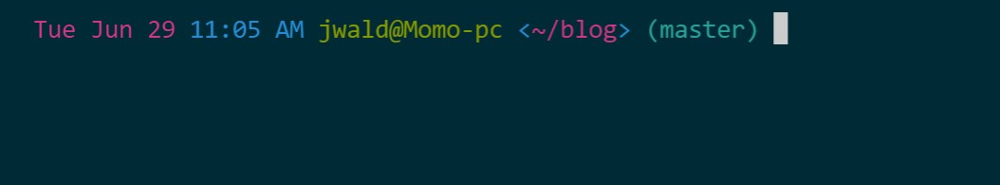
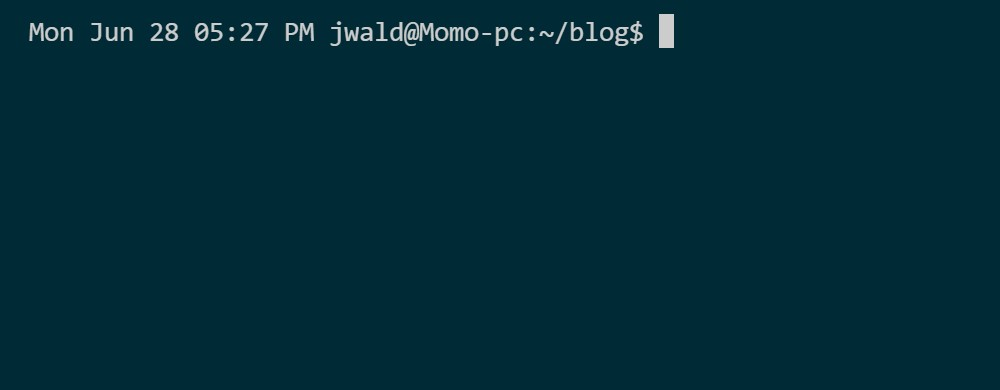
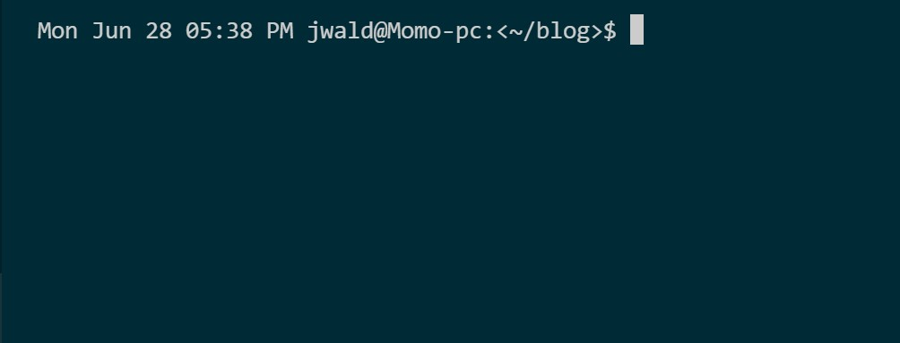
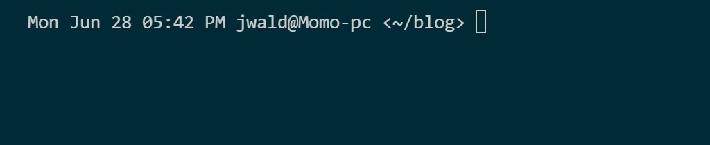

How to customize your Bash Prompt Part 1
If you’re a developer there’s a big chance that you’re familiar with the terminal. The terminal’s used for:
- Git
git pushgit pullgit commit
- Running code
python main.pygcc/g++ main.cpp
- Editing files
nano ~/.bashrc
You get the idea; the terminal’s a big part of a developer’s day, and today, I’m going to show you how to customize it.
If you want to make temporary changes, you can set the PS1 environment variable for only that session; for permanent changes, you can edit the PS1 variable in your ~/.bashrc file. My terminal currently looks like this.

My prompt has:
- Date
- Time
- User@Host
- Current directory enclosed in angle brackets
- The git master branch name in parentheses
My background color theme is from this GitHub repo, but I customized the prompt myself.
Ok, on to the prompt
The prompt string in your ~/.bashrc will start with ${debian_chroot:+($debian_chroot)}, but we can ignore that. If you’ve never customized the prompt, the prompt string will be PS1=" \u@\h:\w$". These are escape sequences that tell bash what to put in the prompt.
What the escape sequences mean:
\umeans the logged-in user’s username\his the hostname of the computer\wis the current working directory- The @ and : are not escaped.
So "\u@\h:\w $" becomes username@computername:workingdir$. To add the date, time, customize the working dir, and add colors, we need to add more escape sequences.
The escape sequence for the date is \ d' the date format will beDay of week Month Day`
After using \ d', my prompt looks likeThu Jun 24 jwald@Momo-pc:~/blog$`
There are three different escape sequences for time.
\T- This escape sequence will show the time in H:M:S format with the hour in 12-hour format
\t- This escape sequence will show the time in H:M:S format with the hour in 24-hour format
\@- This escape sequence will show the time in H:M format along with AM or PM; the hour is in 12-hour format
I picked the \@ escape sequence, so now my prompt is Thu Jun 24 12:53 jwald@Momo-pc:~/blog$, and the prompt string is PS1=" \d \@ \u@\h:\w$"
My terminal looks like this now 
The file path doesn’t look that amazing. It seems a little cramped, so let’s customize that. I’m going to add angle brackets < and > around the current directory path. Remember that \w is the working directory, so I’m going to change my prompt string to look like this PS1=" \d \@ \u@\h:<\w>$". Now it looks like this.

I’m going to remove the colon, the dollar sign and add some spacing to make it look better. With the formatting added, my string is PS1= “\d @ \u@\h <\w>” and the prompt looks much better.

In the next post, I will show you how to colorize your prompt and make it look even better.
Mordy